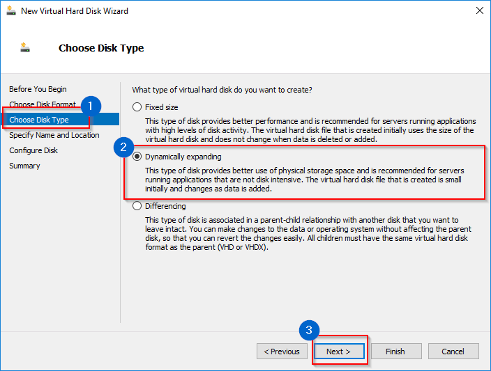

Increase Disk Space
Starting version IP Fabric 5.0.0, appliance is distributed as one hard disk installation instead of two.
IP Fabric appliance is using LVM type for root and swap partitions.
On default installation swap has 16GB and root has ~72GB of space.
We automatically resize the boot disk as follows:
- resize primary partition to full size of the disk
- resize extended partition to full size of primary partition
- extend
ipfabric-vg/rootto+100%FREE - online resize
ext4partition
Increasing Disk Space On IP Fabric Appliance
If you need any help with a disk space expansion, please contact our Support Team
Resizing Root/First Disk
The easiest way how to resize IP Fabric system disk is to
-
Shutdown the appliance
-
Resize root/first disk to a desired size
-
Start virtual machine
cloud-init will take care of resizing this disk.
Expanding System Volume By Adding Additional Disk(s)
If you want to add secondary or any additional disk as a system disk, you will need to manually add it to ipfabric-vg/root volume.
To do that follow LVM resource:
Local Backup Disk
Backup Disk
Backup disk is not present by default! Please add a new virtual disk to enable local backups.
When enabling local backups, a backup tool creates backups to the /backup directory.
The tool first checks if the local backup directory exists and then the backups are created.
Any additional disk or LVM volume (see hypervisor specific configuration on the bottom of this page) of your choice can be mounted as a backup directory. We recommend using for local backups an additional disk that is physically located on a different datastore then the root volume.
Example Of A Physical Disk Being Mounted To /backup Directory
Find a device which you want to use as a /backup directory. In this case /dev/sdb.
osadmin@ST-105:~$ lsblk
NAME MAJ:MIN RM SIZE RO TYPE MOUNTPOINT
sda 8:0 0 19.1G 0 disk
|-sda1 8:1 0 487M 0 part /boot
|-sda2 8:2 0 1K 0 part
`-sda5 8:5 0 18.6G 0 part
|-ipfabric--vg-root 254:0 0 17.6G 0 lvm /
`-ipfabric--vg-swap_1 254:1 0 980M 0 lvm [SWAP]
sdb 8:16 0 20G 0 disk # <- I want to use this device for a /backup directory
sr0 11:0 1 1024M 0 rom
Create a filesystem on the new /dev/sdb disk (in this example ext4)
osadmin@ST-105:~$ sudo mkfs.ext4 /dev/sdb
mke2fs 1.46.2 (28-Feb-2021)
Discarding device blocks: done
Creating filesystem with 5242880 4k blocks and 1310720 inodes
Filesystem UUID: beb1625a-7d35-404b-bb05-972a46b8becf
Superblock backups stored on blocks:
32768, 98304, 163840, 229376, 294912, 819200, 884736, 1605632, 2654208,
4096000
Allocating group tables: done
Writing inode tables: done
Creating journal (32768 blocks): done
Writing superblocks and filesystem accounting information: done
Note down Filesystem UUID from previous example.
If you loose history of terminal output, you can find it later with the following command
osadmin@ST-105:~$ sudo blkid --output value --match-tag UUID /dev/sdb
beb1625a-7d35-404b-bb05-972a46b8becf
Create a new fstab entry
Info
We strongly recommend only LVM partition, LABEL and UUID in fstab, for more info see
Persistent block device naming.
UUID=beb1625a-7d35-404b-bb05-972a46b8becf /backup ext4 defaults 0 0
Disk can be now mounted with
osadmin@ST-105:~$ sudo mount /backup
Finally check lsblk
osadmin@ST-105:~$ lsblk
NAME MAJ:MIN RM SIZE RO TYPE MOUNTPOINT
sda 8:0 0 19.1G 0 disk
|-sda1 8:1 0 487M 0 part /boot
|-sda2 8:2 0 1K 0 part
`-sda5 8:5 0 18.6G 0 part
|-ipfabric--vg-root 254:0 0 17.6G 0 lvm /
`-ipfabric--vg-swap_1 254:1 0 980M 0 lvm [SWAP]
sdb 8:16 0 20G 0 disk /backup
sr0 11:0 1 1024M 0 rom
Deprecated Resize Wizard
IP Fabric appliance < 5.0.0 was using two LVM volumes by default. ipfabic-vg/root for system and data, backup-vg/backup for /backup.
System and data volume was extended over two disks (usually first two). For third and onward, one could choose to extend root or backup volume.
This was dropped in favour of one system/data disk with possibility to add backup disk. The original script is still present in the system,
but is discouraged to use it as it is expecting only boot disk to be sda, sdb as extended ipfabic-vg/root and one could choose
how sd[c-z] would be used. The new approach with one disk is more versatile, and it is not limited to sd[a-z] disks.
Deprecated script
This script should not be used anymore. You should run only when you are sure you know what you are doing.
Script location: /opt/nimpee/sys-lvm-resize.sh
Increase Disk Space For VMware
Extend Existing Virtual Disk (For System And Data)
- Open VMware vSphere web console.
- Right click on VM name and select Edit Settings.
- Select Hard disk and change its size.
- Click OK.
- Restart VM (using CLI or web UI).
- Disk space is automatically increased if you resized the first drive.
Add New Virtual Disk (As An Additional Backup Disk)
- Open VMware vSphere web console.
- Right click on VM name and select Edit Settings.
- Click Add New Device Hard Disk
- Select new size
- Specify Location: 1. for system disk expansion is recommended to select Store with the virtual machine 2. for backup volume is recommended to select different datastore ideally on a different physical storage
- Click OK

- Launch Remote (Web) Console.
- Reboot(Send Ctrl+Alt+Delete function can be also used) or power on IP Fabric VM.
- Follow Adding additional disk(s) or Example adding disk to backup
Increase Disk Space For Hyper-V
Extend Existing Virtual Disk (For System And Data)
- Open Hyper-V Manager.
- Shutdown VM. (when Started, HyperV won't let you change any hardware settings)
- Right click on VM name and select Settings.
- Select IDE Controller - Hard Drive - ipfabric-x-x-x-disk1.vhdx
- Click Edit - Choose Action - select option Expand, click Next.
- Set up required disk size and click Finish.
- Start VM.
- Disk space is automatically increased, if you resized the first disk.
Add New Virtual Disk (As An Additional Backup Disk)
- Open HyperV Manager.
- Shutdown VM. (when Started, HyperV won't let you change any hardware settings)
- Right click on VM name an select Settings.

- Select IDE Controller 1 - Hard Drive - click Add

- Select Virtual hard disk - click New - select Choose
Disk Format - select VHDX - click Next.

- Select Dynamically expanding - click Next 
- Specify name and location of disk.
- Configure Disk - select Create a new blank virtual hard
disk - change Size to required value - click
Finish.

- Apply new disk on Settings window - close Settings.
- Start VM.
- Follow Adding additional disk(s) or Example adding disk to backup
{kind=link}